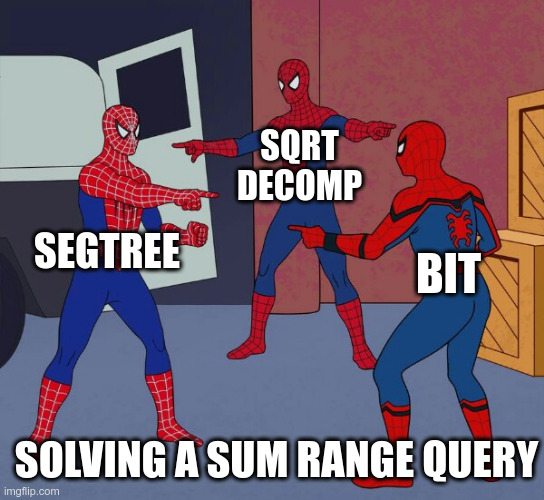
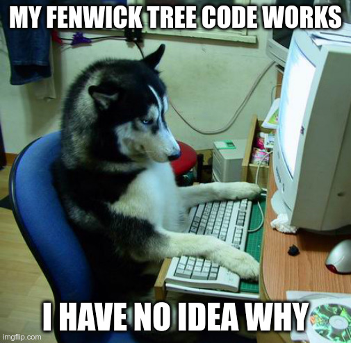

Main learning outcomes for this class
- Cumulative Sums:
- I know the concept of cumulative sums ("prefix sums")
- I know the inclusion-exclusion principle and how to extend cumulative sums to more than one dimension
- Fenwick Trees (Binary Indexed Trees, a.k.a. BITs):
- I know the concept of a BIT, the way nodes store cumulative sums and its (simple) implementation
- I know how to answer several types of queries related with sums, such as:
- single updates, range queries [rangea(a,b) using bit(b)-bit(a-1)]
- range updates, single queries [update(a,b,v) using update(a,v) and update(b+1,-v)]
- range update, range queries [using two BITs]
- I understand how to adapt to more dimensions, and in particular to the case of 2D (a BIT of BITs)
- Maximum Subarray Problem:
- I know the problem of determining maximum sum of a contiguous subsequence
- I know Kadane's Algorithm to solve this problem in linear time
Study Material
- Video Lecture (my own video from the Topics in Advanced Algorithms course):
- Cumulative sums
- BITs
- Kadane's Algorithm
Initiation/Reinforcement Problems
Here are some (easy) problem suggestions if you want to more directly test your knowledge on the topics of this class:
I want my memes!
😁 Which data structure?

😁 BIT Implementation

Pedro Ribeiro - DCC/FCUP | Last update: